There's a specific kind of bedroom that makes you want to slow down the moment you walk in — a quilt that's clearly been folded and unfolded a hundred times, lace catching the light at the window, a jar of garden flowers on the nightstand. That's cottagecore, and it's less a decorating formula than a mood.
It doesn't ask for matching furniture or a tight color palette. It asks for texture, a few worn pieces, and a room that looks like it happened gradually rather than all at once — a flea-market dresser next to brand-new bedding, a crooked gallery wall, nothing too polished.
Below are 30 ways into that feeling, from the bigger moves — a bed frame, a wall treatment — down to small, almost sentimental details. Pick a handful that fit your space and skip the rest.

1. A Reading Corner Grounded by a Jute Rug
If a full room redo feels like too much, start here. A low chair, a small table, and a natural jute rug underneath turns one corner into the spot that sets the tone for everything else.
Layer a smaller patterned rug half on top of the jute rather than leaving it bare — it adds just enough pattern without fighting your bedding or wallpaper.
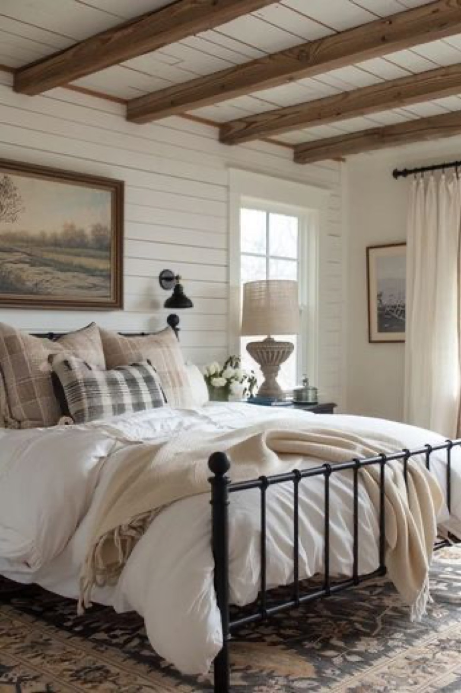
2. A Stack of Mismatched Quilts at the Foot of the Bed
A pile of folded quilts left out — on a shelf, a bench, or right at the foot of the bed — reads as years of collecting, even when every quilt came from the same order.
Mix patterns instead of buying a matched set. That's the detail that actually sells the handmade, passed-down feel this style is built on.
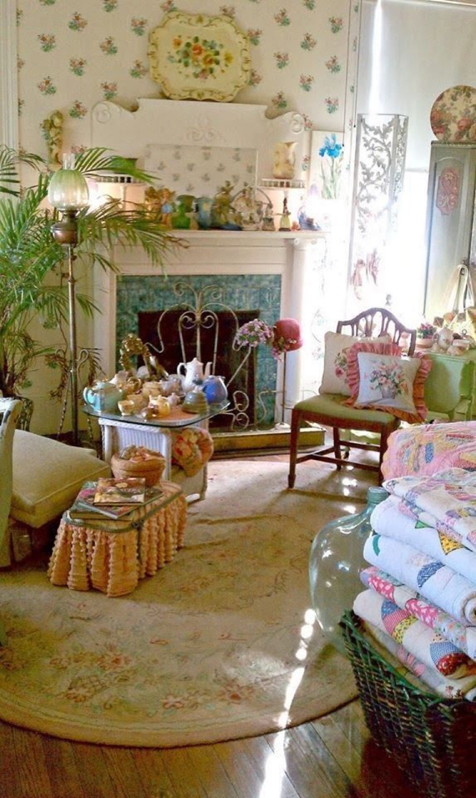
3. Red Gingham on a Small Window
Gingham brings a cheerful, farmhouse-kitchen energy that most other prints don't, and it's one of the lowest-risk ways to add pattern without redoing the whole room.
Keep it to one window — above a seat, in a nook — somewhere it reads as a pop rather than a full commitment. Pair it with solid, muted bedding so it stays the loudest thing in the room.
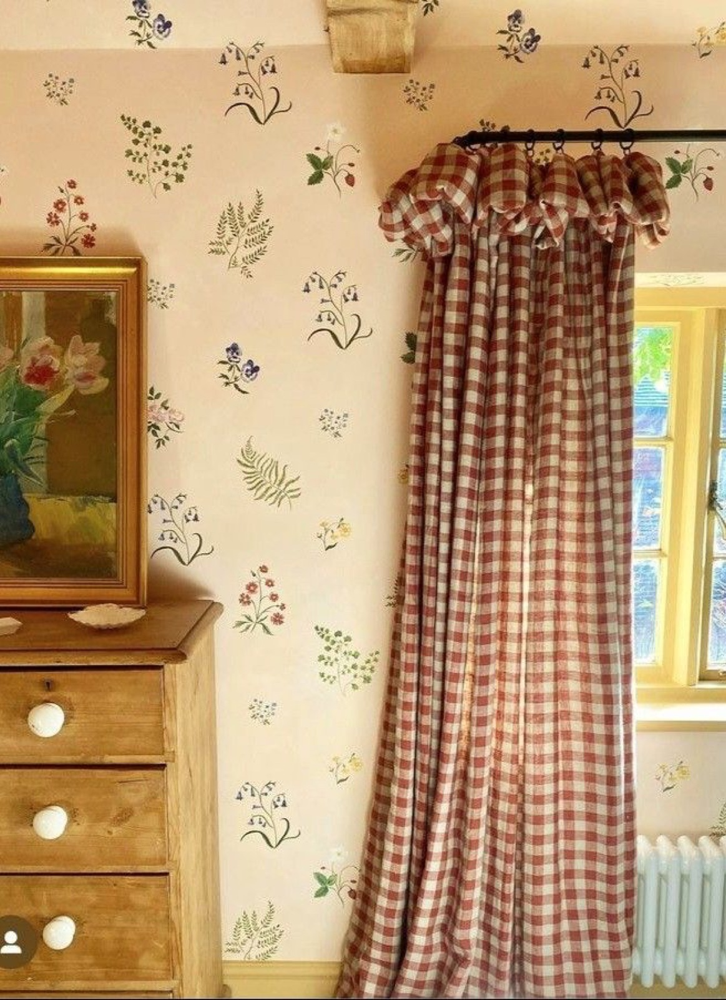
4. A Loose, Slightly Lopsided Dried Flower Arrangement
Dried flowers solve the actual problem with fresh ones — they don't wilt in four days. Pampas grass or faded dried roses bring real texture to a nightstand without any upkeep.
Keep the arrangement asymmetrical. A few stems noticeably longer than the rest, catching light and throwing a little shadow, looks far more natural than a perfectly full bunch.
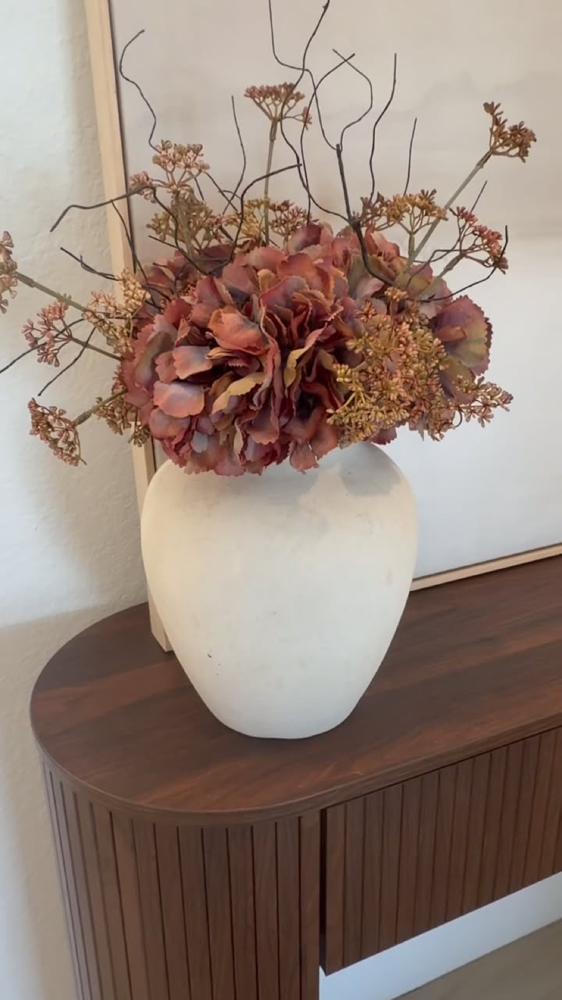
Natural Dried Flower Bouquet, Boho Pampas Grass and Eucalyptus
Shop on Amazon5. A Wrought Iron Bed Frame, Dressed Loosely
An iron frame does most of the work on its own — the scrollwork alone looks inherited. Dress it in ruffled bedding in a faded color and let the duvet pool at the foot rather than pulling it tight.
Look for a finish with some texture to it, not flat matte black, and a headboard tall enough to actually anchor the wall behind it.
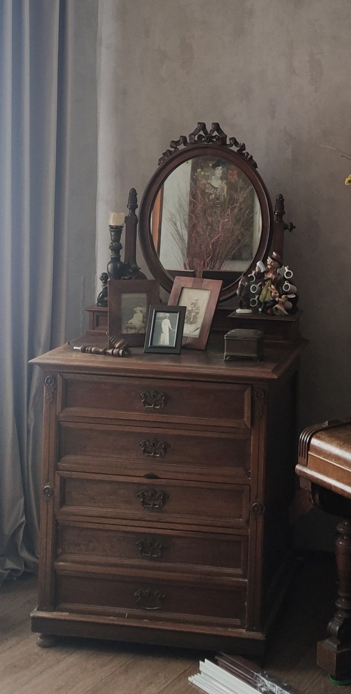
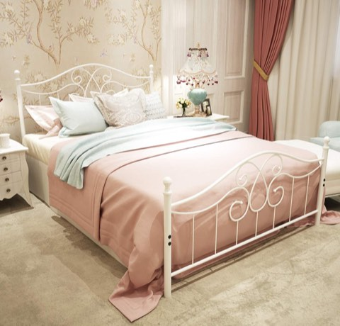
TUSEER Metal Bed Frame Queen with Vintage Headboard, Wrought Iron, White
Shop on Amazon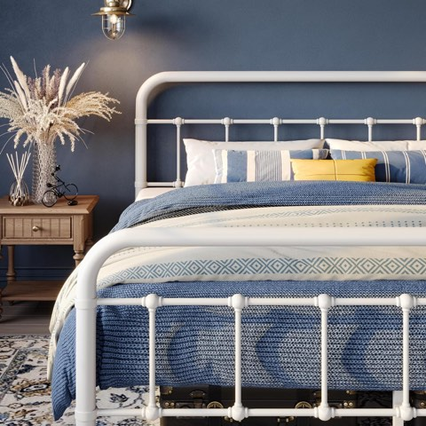
WEEWAY Queen Metal Bed Frame with Wrought Iron-Art Curved Headboard, White
Shop on Amazon6. A Wicker Nightstand to Soften the Room
Woven texture reads summery and relaxed in a way wood alone doesn't, even sitting right beside something more formal like a brass frame or a tall mirror.
Pick one with at least a drawer or shelf so it still earns its spot as storage, not just texture for texture's sake.
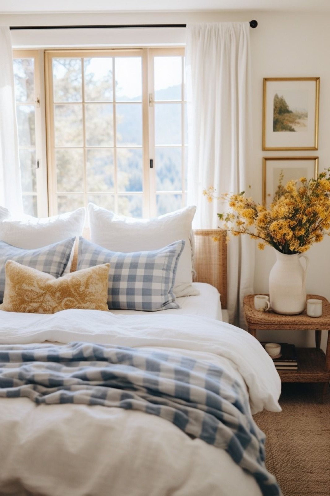
7. Sage Green Walls Hung With Pressed Botanicals
Sage does something most greens can't — it reads fresh and faded in the same breath, like a farmhouse wall repainted a dozen times over the decades.
Hang pressed botanicals in a loose, uneven grid rather than a perfectly even one, and leave the trim white so the color doesn't tip toward dark.
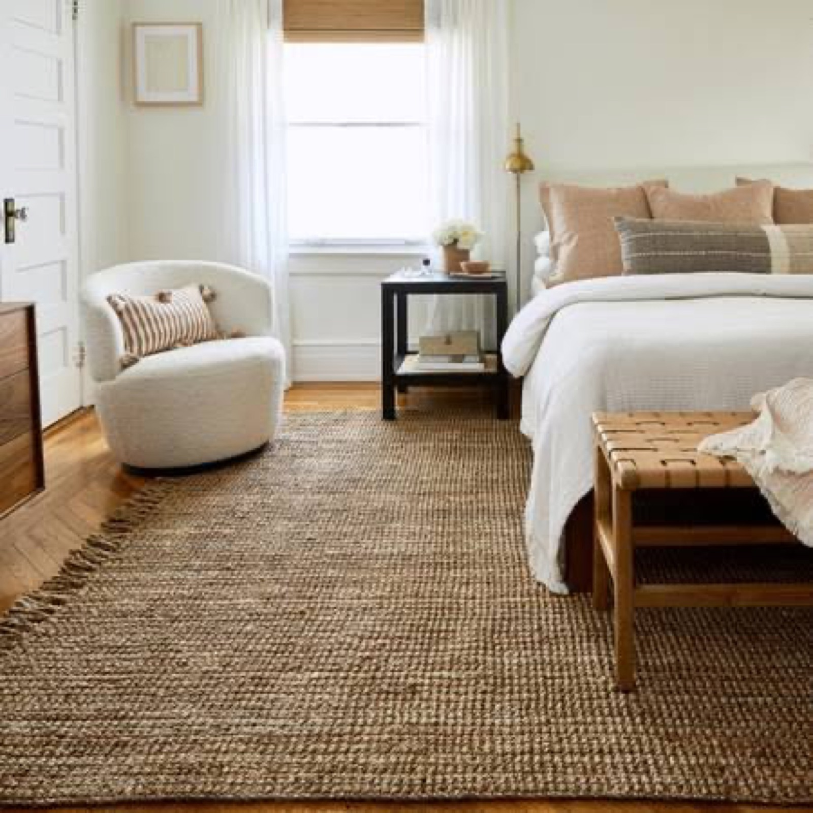

8. A Straw Hat and Tote Hung by the Door
This is the lowest-effort idea on the whole list and it still does real work for a room's personality. Hooks by the door holding a straw hat, a tote, maybe a cardigan — it reads as lived-in, not staged.
Mount the hooks at slightly different heights so everything overlaps a little instead of lining up like a store display.
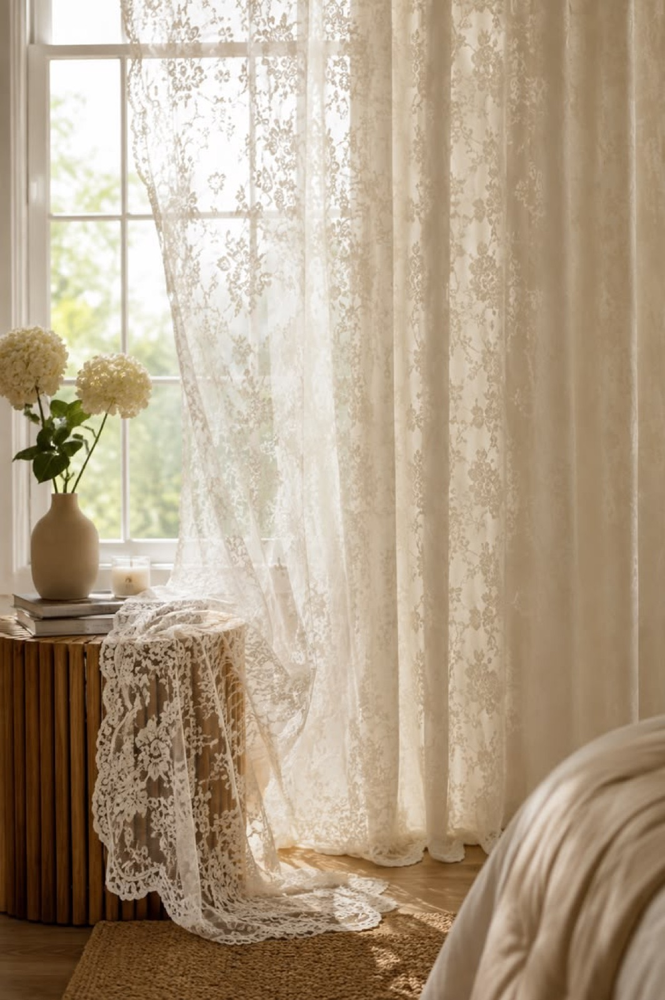
9. A Slipcovered Daybed in an Odd Corner
A washable slipcover and a daybed turn a spare or oddly shaped corner into an actual sitting spot — part chair, part guest bed, part reading nook.
Pile on pillows in coordinating florals and solids, and add a ruffled cushion if the daybed looks a little plain by itself.
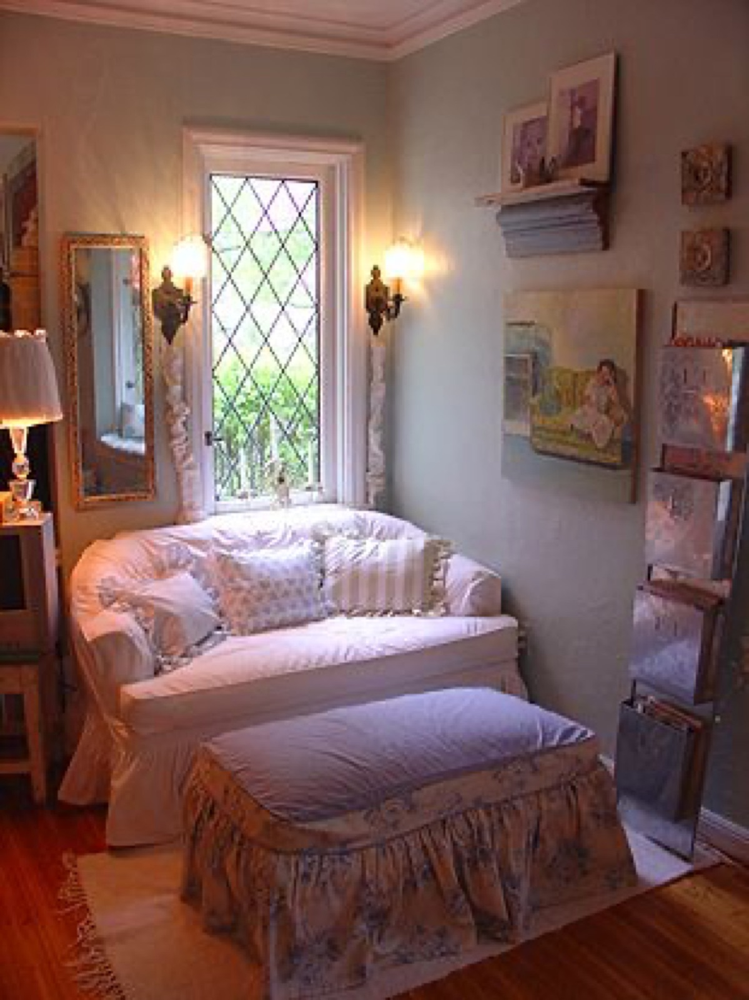
10. An Oversized Floral Mural on One Wall
If full botanical wallpaper feels like too much, a large-scale floral mural on a single wall gets you the drama without covering the whole room.
Choose a moody, antique colorway and keep everything else in the room quiet — plain bedding, simple furniture — or the mural starts competing with itself.
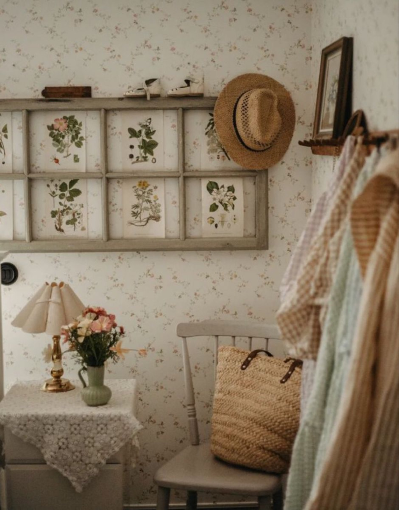
11. A Small Gallery of Framed Pressed Flowers
Unlike a printed botanical, a pressed flower frame holds an actual specimen, which makes the wall feel collected rather than purchased.
Group four to six in simple wood or glass frames, mixing flower types instead of repeating the same one in every frame.
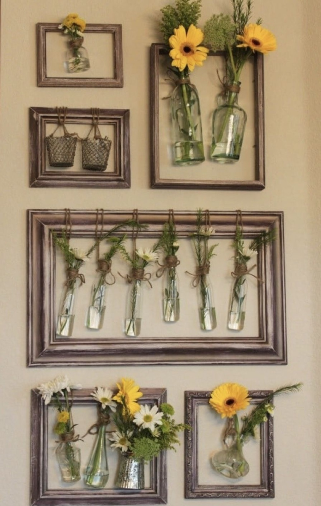
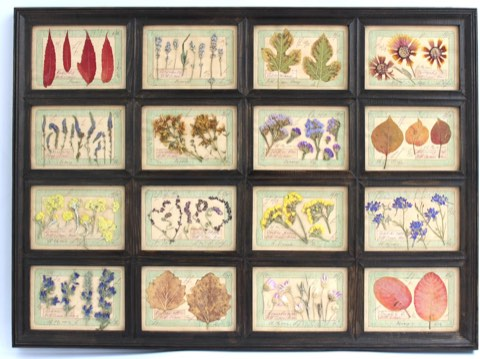
Framed Pressed Flower Art, Large Black Wood Frame, Farmhouse Dried Herbs
Shop on Amazon12. A Gallery Wall of Mismatched Frames
A gallery wall — botanical prints, a landscape or two, an old family photo — fills a room with personality without touching a single piece of furniture.
Lay the whole arrangement on the floor first and photograph it from above before you commit to a nail. It's the step that keeps a gallery wall from turning into patched plaster.
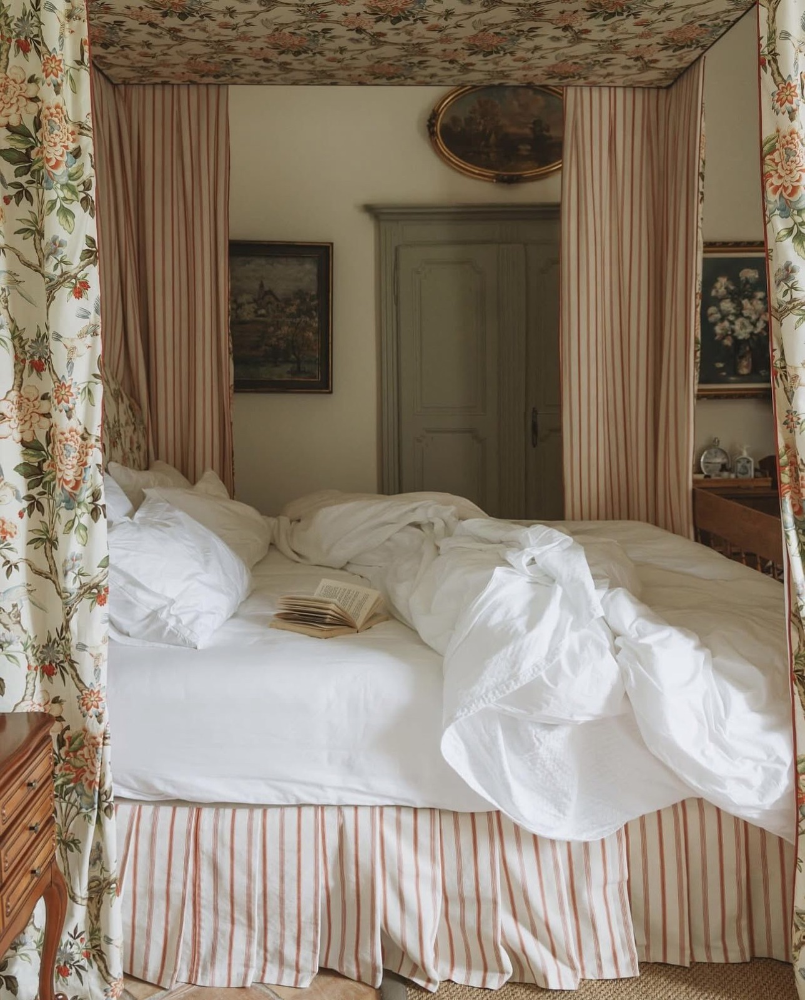
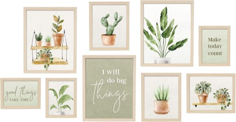
ArtbyHannah 9-Piece Botanical Gallery Wall Frame Set, Beige Wood Frames
Shop on AmazonArtbyHannah 7-Pack Gold Gallery Wall Picture Frames with Botanical Art Prints
Shop on Amazon13. A Hand-Crocheted Bedspread Layered on Top
Nothing on this list feels more handmade than a crocheted bedspread — you notice the texture before you even register what it is.
Layer a cream or beige crochet coverlet over a solid duvet for instant texture and a sense of history, bought last week or not.
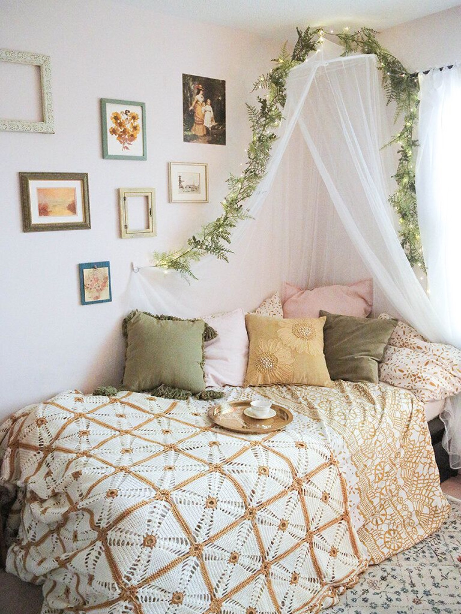
14. Dark, Moody Floral Wallpaper on One Wall
Skip the pale ditsy prints and go deep instead — black-background botanicals with roses or climbing vines feel like an old English countryside house, not a farmhouse guest room.
Contain it to one wall or an alcove, and keep the bedding pale against it. That contrast is what makes it feel intentional instead of heavy.
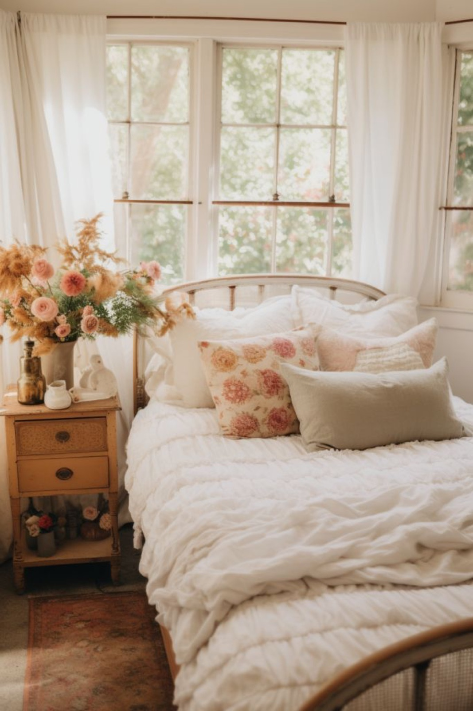
Ismoon Vintage Floral Peel and Stick Wallpaper, Dark Black
Shop on AmazonIdomural Dark Floral Peel and Stick Wallpaper, Moody Brown Vintage Botanical
Shop on Amazon15. An Antique Washstand With a Pitcher and Bowl
A pitcher-and-bowl washstand is about as pre-plumbing-farmhouse as decor gets, and it's hard to fake that charm any other way.
You don't need it functional — most people keep theirs purely decorative, pitcher filled with dried flowers instead of water, tucked somewhere it can just be admired.
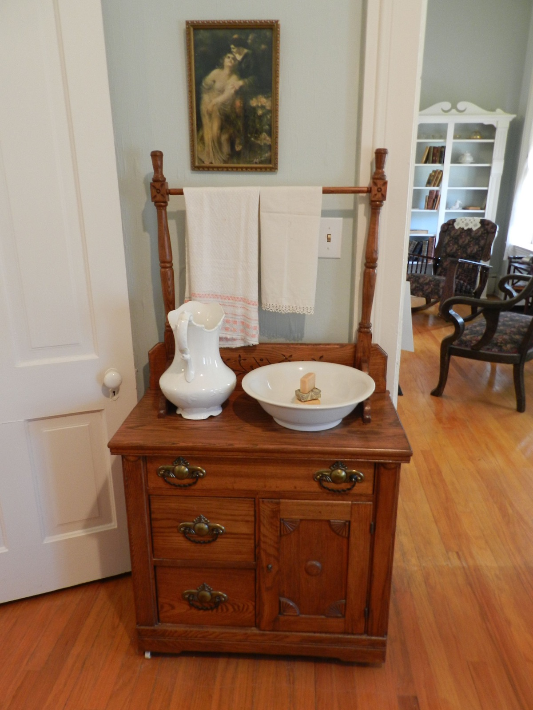
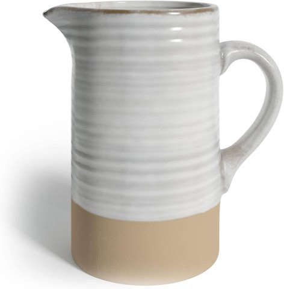
Barnyard Designs 1.5 Quart White Ceramic Pitcher, Vintage Rustic Farmhouse
Shop on Amazon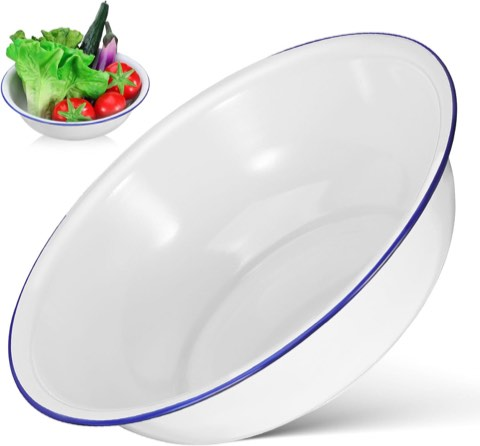
Vintage Enamel Mixing Bowl, Large White Enamel Wash Basin, Farmhouse Retro
Shop on Amazon16. Pink Striped Bedding and a Stack of Books
Stripes keep pink from reading too sweet while the color still does all the warm, cozy work cottagecore wants. Pile on mismatched floral pillows and a stack of well-loved books right on the bed.
Treat it as a seasonal swap — bring the stripes out for spring and summer, store them for something heavier once the weather turns.
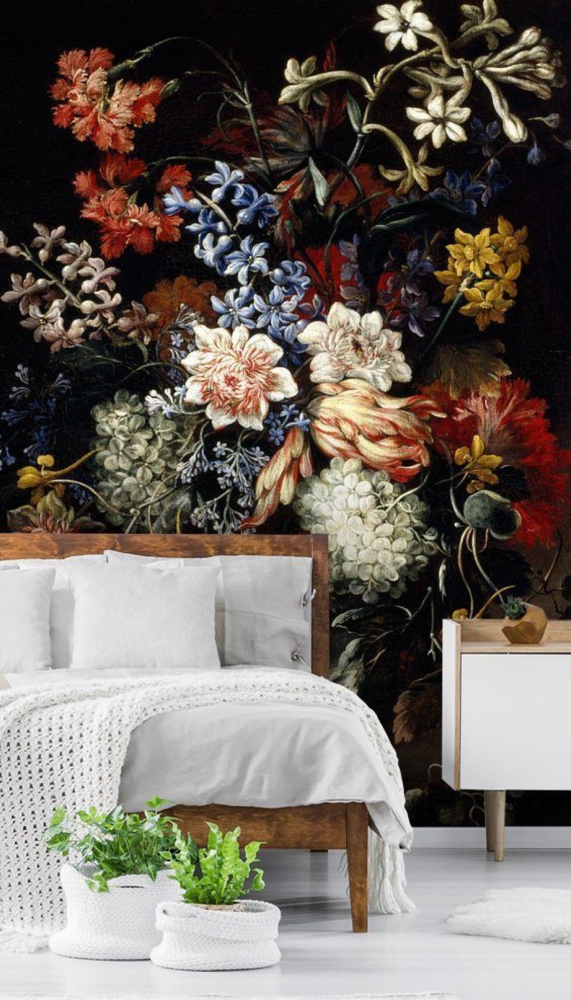
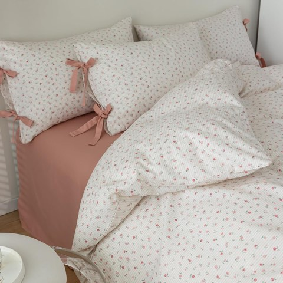
VM VOUGEMARKET Pink Flower Stripes Duvet Cover Set, Cottagecore, 100% Cotton
Shop on Amazon17. A Built-In Window Seat for Reading
This is the dream-scenario idea on this whole list — a cushioned bench tucked into a bay or arched window, just enough room to curl up and watch the weather.
A custom-fit cushion in a soft floral or chenille makes the real difference. An ill-fitting one turns even a gorgeous built-in into an afterthought.
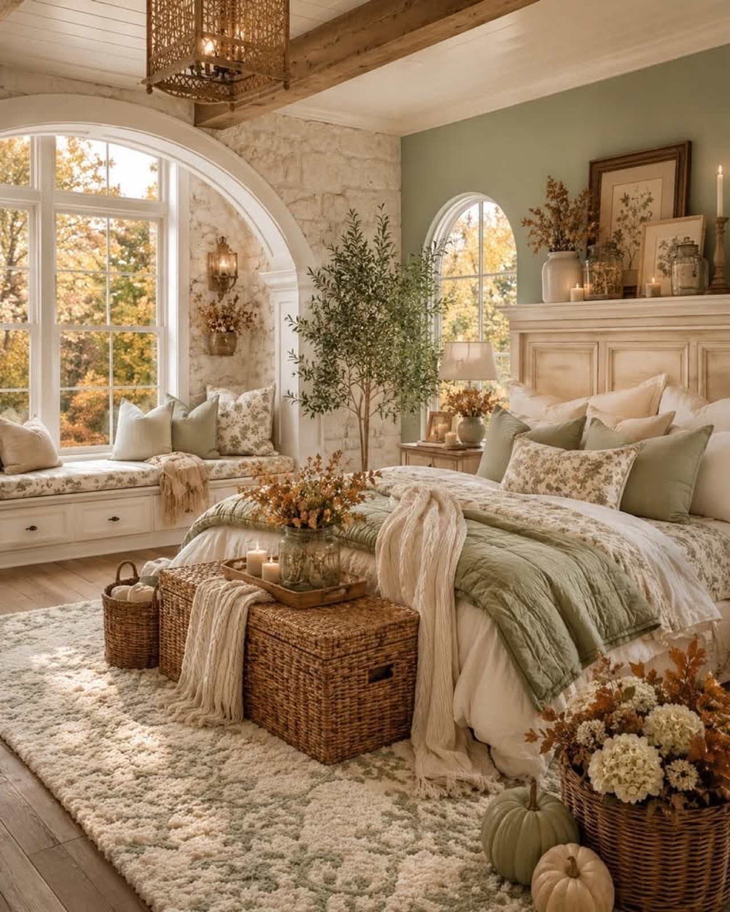
18. An Antique Dresser With an Oval Mirror
A dresser with an oval or arched mirror earns its footprint twice over — storage, plus a spot to check yourself on the way out the door.
Look for warm wood, curved drawer fronts, and a little visible wear. Style the top with restraint: a tray, a vase, one or two framed photos.
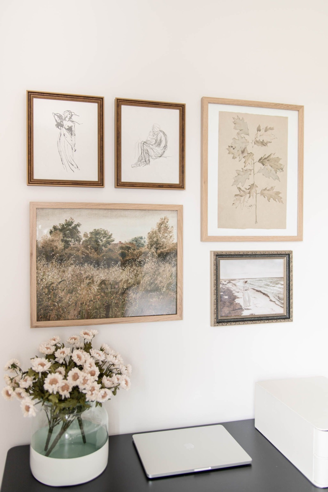
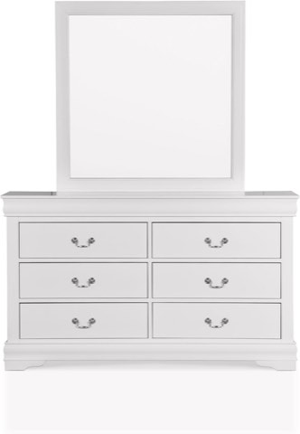
Furniture of America Arabella Traditional Wooden 6-Drawer Dresser with Mirror
Shop on Amazon19. A Distressed Nightstand Topped With a Ceramic Pitcher
Small and quiet, but this detail does more for the cottagecore feel than almost anything louder on this list.
The distressing should look earned, not manufactured — slightly uneven paint, visible grain. Fill the pitcher with fresh or dried stems, or leave it empty as its own little sculpture.
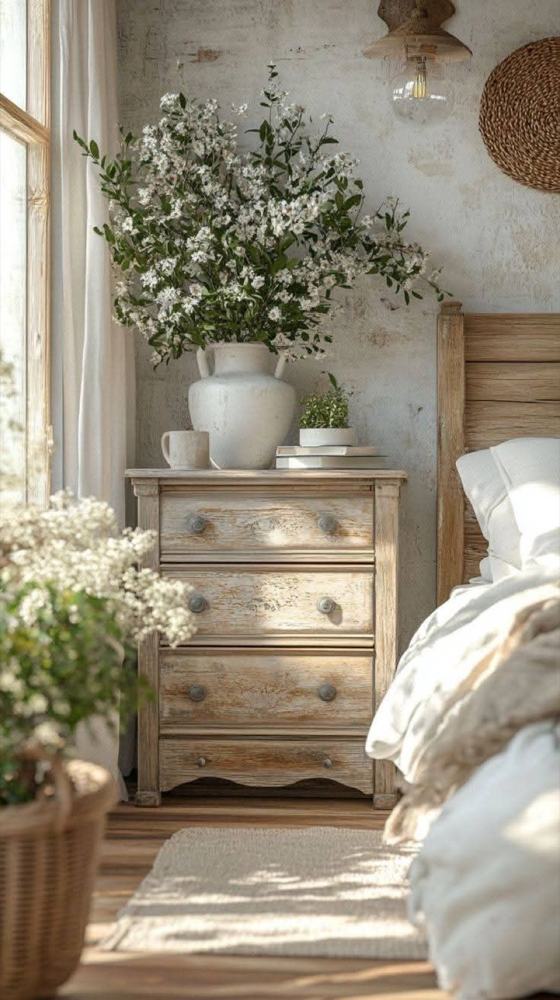
COZAYH Farmhouse Nightstand with 2 Drawers, Distressed Wood, Burl Finish
Shop on AmazonSullivans Modern Farmhouse Decorative Ceramic Pitcher, Distressed Off-White
Shop on Amazon20. A Sheer Lace Canopy in a Sloped-Ceiling Room
An attic bedroom already does half the fairy-tale work with its sloped ceiling and exposed rafters. A lace canopy over the bed finishes the scene.
A ceiling-mounted ring with lace draped down is usually more realistic than a full four-poster in an attic's awkward angles — and it often looks more romantic for being simpler.
SFYZ HOME Princess Lace Bed Canopy with Metal Gold Crown
Shop on AmazonWarm Home Designs White Lace Canopy Bed Curtains with Tie-Backs
Shop on Amazon21. Billowing Lace at the Windows
Lace curtains filter light into something soft and a little golden, without blocking the view the way heavier drapery does.
Reach for ivory or cream over stark white — it reads warmer and more antique, especially against a painted wall or floral wallpaper.
ALIGOGO White Lace Curtains, Vintage Floral Sheer, Scalloped Edges
Shop on AmazonAnmao Vintage Lace Curtains, Semi Sheer Floral Lacy Drapes, Cream Yellow
Shop on Amazon22. A Floral Armchair Tucked Into the Corner
A high-back chair in a faded floral print gives a bedroom a second reason to linger in it besides the bed itself.
Drape a knit throw over one arm, keep a small table within reach, and let it be the one spot people remember most about the room.
Vintage Floral Accent Chair, Upholstered High Back Lounge Armchair
Shop on AmazonBattilo Cream Ivory Cable Knit Throw Blanket
Shop on Amazon23. Shiplap Walls and One Exposed Beam
Shiplap paired with a single wood beam gives a newer room real architectural texture — the kind that makes it feel like it's been standing for a century.
If a full installation isn't realistic, a faux beam across the ceiling alone does a surprising amount of the work, especially behind a headboard.
Indoor/Outdoor Wood Shiplap Paneling, Decorative Wall Panels, Bright White
Shop on AmazonFaux Wood Beams, Pack of 2, Light Oak, Polyurethane
Shop on Amazon24. A Dark Green Wall for a Moodier Feel
Dark green takes cottagecore in a nighttime direction — less sun-washed cottage, more candlelit library in an old stone house.
It's a gorgeous backdrop for warm wood and brass hardware. Keep the rest of the palette warm too — cream, rust, aged brass — or the room starts feeling modern instead of cottage.
HelloWall Dark Green Forest Wallpaper, Peel and Stick, Moody Botanical
Shop on AmazonDixie Belle Chalk Finish Furniture Paint, Evergreen
Shop on Amazon25. A Vintage Trunk Standing in for a Nightstand
A trunk solves two problems at once: a surface for a lamp and a book, plus hidden storage for everything you don't want sitting out.
Old leather or canvas with brass hardware has exactly the well-traveled character this style wants, and it's genuinely useful, not just decorative.
Vintage Trunk Nightstand with Drawers, Retro Suitcase Bedside Table
Shop on AmazonNauticalMart Leather Wood Trunk, Vintage Style Storage Trunk
Shop on Amazon26. Matching Floral Curtains and Canopy Fabric
Carrying one print from the windows up over the bed ties a whole room together faster than almost anything else on this list.
Pick a print with enough scale to still read clearly once it's spread across multiple surfaces — a tiny print can get lost.
MYUSRE Yellow Floral Curtains, Cottagecore Blackout, 2 Panels
Shop on AmazonSage Green Vintage Floral Curtains, Cottagecore Farmhouse, 2 Panel Set
Shop on Amazon27. A Vintage Vanity With an Arched, Gilded Mirror
It's one of the more indulgent ideas here, but a vanity earns its keep every single morning, antique or not.
Look for curved legs and a mirror frame with real detail. Style the top with a handful of small objects — a perfume bottle, a dish for jewelry — and let the mirror stay the focal point.
KT Rolster Vintage Makeup Vanity Desk Set with Mirror and Stool, Walnut
Shop on AmazonAIXI HOME Vintage Gold Vanity Arched Mirror, Ornate Metal Frame
Shop on Amazon28. A Draped Canopy Strung With Warm Fairy Lights
This takes the romance of a four-poster and pushes it toward something more whimsical — the idea to reach for if you want the room to feel like a storybook at night.
A wall-mounted bed crown with sheer fabric down either side is the easiest route, and warm, dimmable lights woven through the fabric do the rest. Skip anything close to daylight white.
OctoRose Metal Wall Teester Bed Crown Canopy, Antique Copper
Shop on AmazonMZD8391 Curtain String Lights, Warm White Fairy Lights for Bed Canopy
Shop on Amazon29. An Ornate Brass Bed Frame
Brass brings a more formal, almost Victorian elegance than a simpler iron frame, without losing any of the romance.
Look for real detail in the headboard — scrollwork, a lattice pattern — and let it pair with floral wallpaper or a garden view as the room's obvious centerpiece.
Safavieh Home Morris Moroccan Antique Gold Bed, Queen
Shop on AmazonYaheetech Queen Metal Bed Frame, Victorian Vintage Headboard, Antique Gold
Shop on Amazon30. A Floral Fabric Canopy Over a Four-Poster
This is the most dramatic idea on the whole list, and one of the most satisfying to pull off for the effort it actually takes.
A simple wood four-poster with a floral fabric panel pinned across the top gets you most of the way there. Keep the bedding underneath plain — white or cream — so the canopy fabric stays the star.
Vintage Floral Curtains, Rustic Cottage Drapes, Country Farmhouse Decor
Shop on AmazonQueen Size Wood Canopy Bed Frame, Walnut Vintage Four-Poster
Shop on AmazonHow Many of These You Actually Need
Thirty ideas is a lot, and no single bedroom should try to use all of them. The rooms that actually feel like cottagecore, instead of a costume of it, usually lean on five or six of these at most, layered in slowly.
Pick one anchor first — a bed frame, a wallpaper, a big piece of bedding — and build outward with texture: a rug, something crocheted, a few pressed flowers, real flowers whenever you can manage them.
Let it look a little undone. Stacked books, a draped throw, flowers that aren't perfectly arranged — that's the difference between a cottagecore bedroom and a showroom pretending to be one.